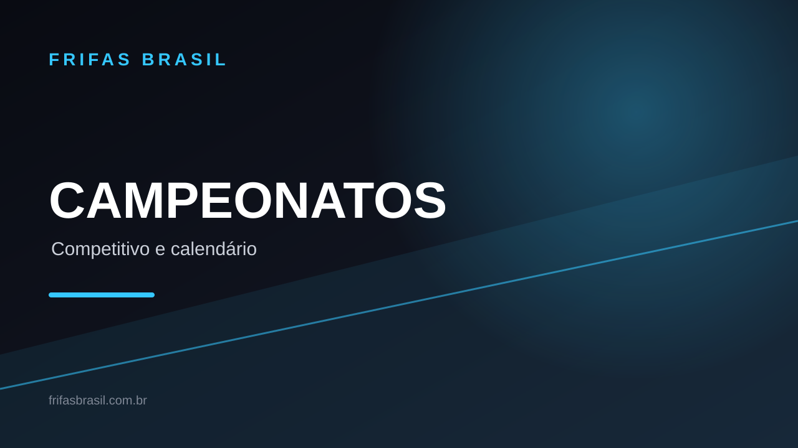

Free Fire vence prêmio de jogo mobile em atividade no GamingonPhone Awards 2026
A Garena informou em 12 de novembro que Free Fire recebeu o prêmio “On-going Mobile Game of the Year” no GamingonPhone Awards 2026. A categoria reconhece jogos mobile que seguem ativos e recebendo conteúdo ao longo do tempo.

O que a Garena confirmou?
Na área de notícias de sua página institucional, a Garena registrou que Free Fire venceu a categoria “On-going Mobile Game of the Year” da edição de 2026 do GamingonPhone Awards. O comunicado foi publicado em 12 de novembro.
A descrição da empresa relaciona o reconhecimento à continuidade do jogo e à comunidade que acompanha o título perto de completar uma década. A informação principal é a vitória na categoria; ela não significa que Free Fire tenha vencido todas as categorias da premiação.
O que significa a categoria?
“On-going Mobile Game of the Year” é uma categoria voltada a jogos para celular que continuam em operação e mantêm uma trajetória de atualizações e atividades. O nome da categoria é diferente de “Mobile Game of the Year”, que é uma premiação distinta.
O que isso representa para a comunidade?
O prêmio é um reconhecimento externo da presença contínua de Free Fire no mercado de jogos mobile. Para jogadores e criadores de conteúdo, a notícia funciona como um marco da trajetória do jogo, mas não altera regras, recompensas ou recursos dentro do aplicativo.
Não há, no anúncio consultado, indicação de recompensa dentro do jogo vinculada à premiação. Portanto, não existe motivo para inserir códigos, links de resgate ou promessas de itens grátis com base apenas nessa notícia.
Fonte consultada: área oficial de notícias da Garena, publicação de 12 de novembro de 2026. página oficial de notícias da Garena (garena.sg).